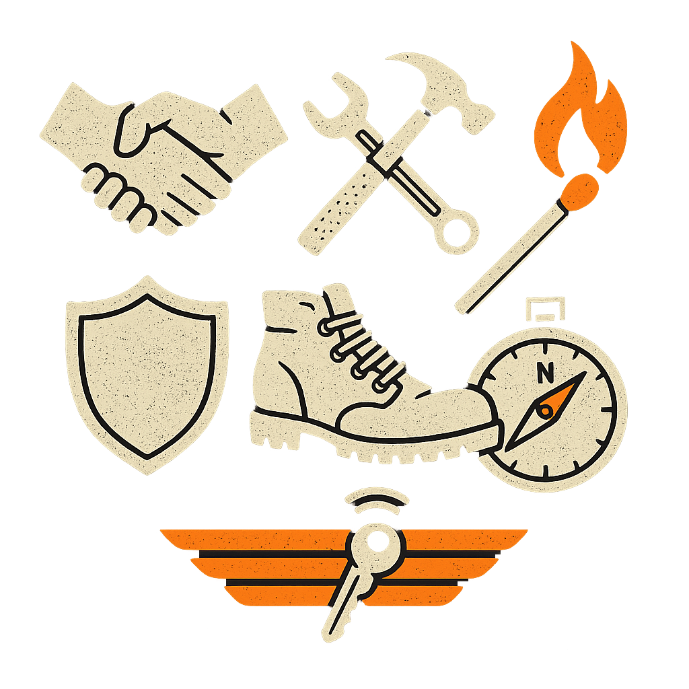

VĚCI, CO BY MĚL UMĚT KAŽDÝ CHLAP DO 50

Jestli ti táhne na padesát, nebo už jsi ji překročil, a pořád jsi jen přestárlý kluk v těle chlapa, je možná na čase začít se ptát: co jsem se za těch padesát let vlastně naučil?
Tady není prostor na výmluvy. Nemáš čas.
Padesátka je deadline. Jestli do toho věku neumíš základní věci, nezasloužíš si úctu. Ne od světa, ne od ženy, hlavně ne od sebe. Tak si to pojďme rozsekat. Tohle je seznam dovedností, návyků, charakterových znaků a schopností, které by měl mít každý chlap do 50 zvládnuté. Jestli ne, máš co dohánět.
Umět říct „NE“ – a stát si za tím
Do padesáti bys měl mít jasno v tom, kde končí tvoje hranice.
A když někdo začne testovat, jestli si je necháš přepsat, musí narazit.
Umět odmítnout, bez omluv, bez vysvětlování, je základ chlapa, který zná svou cenu.
Chlap do 50 se musí umět postarat se sám o sebe
Měl bys umět:
- uvařit základní jídlo,
- opravit základní věci v domácnosti,
- vyřešit krizovou situaci,
- rozhodnout se, kde budeš spát a co budeš jíst,
- spravovat finance,
Jestli před padesátkou tápeš jak kluk na intru, něco je sakra špatně.
Mít silné tělo – nebo alespoň funkční
Nehraju si na fitnesáka, ale chlap bez síly je chlap bez páteře.
Měl bys být schopný:
- uběhnout pár kiláků,
- odnést těžký nákup,
- udělat pár kliků,
- rozdělat oheň,
- přežít bez komfortu.
Ne kvůli postavě.
Kvůli sebeúctě.
Umět se kontrolovat
Do padesáti už bys měl mít zvládnuté svoje démony – nebo aspoň vědět, kde jsou a co na ně platí.
Nemáš právo vybuchovat jak sopka, chlastat do bezvědomí nebo prchat z reality.
Sebekontrola není potlačování.
Je to o moci nad sebou.
Umět se omluvit – když to fakt posereš
Silný chlap umí uznat, že udělal chybu.
Ne se plazit, ne se sypat, ne se omlouvat za všechno.
Ale když fakt víš, že jsi ujel –
máš koule říct „byl jsem vůl?“
Neutíkat před tichou chvílí
Před padesátkou už bys měl umět sedět sám se sebou v tichu.
Bez mobilu, bez lidí, bez televize.
Jen ty a tvoje myšlenky.
Většina lidí se bojí ticha, protože tam na ně vylezou věci, co celý život dusí.
Ale právě v tichu rosteš.
Rozumět své hlavě
Není nutné být psycholog, ale měl bys vědět:
- proč reaguješ, jak reaguješ,
- odkud se berou tvoje vzorce,
- co tě triggeruje,
- jak si srovnat hlavu, když jdeš ke dnu.
Chlap, co nezná sám sebe, je řízený silami, kterým nerozumí.
Mít v sobě něco, co tě přesahuje
Nazvi to víra, spiritualita, smysl, mise.
Něco, kvůli čemu vstáváš i v den, kdy bys nejradši zůstal ležet.
Bez vyššího důvodu se rozložíš.
Všechno začne být jen o přežívání.
Mít za sebou pády – a stát na nohou
Do padesáti jsi určitě zažil propady.
Pokud ne,
žiješ ve vatě nebo jsi žil na půl plynu.
Chlap je formovaný krizí.
Důležité ale je, že ses zvednul.
Ne jak moc jsi spadnul.
Mít chlapský kruh – nebo aspoň jednoho parťáka
Ne kámoše na pivo.
Parťáka, co tě zná do morku kostí a podrží, když to bude třeba.
Žádný chlap nesmí být úplně sám.
Umět se rozhodovat pod tlakem
Žádné váhání.
Žádné „nevím“.
Rozhodni, nes následky, jdi dál.
I špatné rozhodnutí je lepší než žádné.
Vědět, co je tvoje poslání
Každý chlap by měl vědět, k čemu tady je.
Co je jeho otisk, co po něm zůstane.
I kdyby to bylo „jen“ to, že vychoval silného syna.
Umět si hrát – ale bez dětinskosti
Umět si hrát s dětma, se ženou, se sebou –
vědomá radost,
ne útěk.
Chlap, co zapomněl na radost, je mrtvý zaživa.
Ovládat svoje ego – ne ho popírat
Ego je nástroj, ne pán.
Pomáhá ti vstát, ukázat se, postavit se světu.
Ale nesmí tě ovládat.
Kdo jede čistě na egu, dřív nebo později narazí.
Mít vztah k bolesti
Neutíkat před ní.
Nelitovat se.
Umět s ní být – s fyzickou i psychickou.
Bolest je průvodce růstu.
Zažít dno – a vyjít z něj
Aby sis ověřil, kdo fakt jsi.
Když nejsou peníze, zdraví, lidi, energie – co ti zbyde?
Když tě vše opustí, co zůstane?
To je tvoje jádro.
Nebýt závislý – na ničem a na nikom
Ne na ženě, ne na lajku, ne na chlastu, ne na práci.
V padesáti bys měl být soběstačný
Všechno ostatní je bonus.
Umět přiznat, že nevíš – a chtít se učit
Padesátka není konečná.
Je to: „Teď vím, co všechno nevím.“
Pokora není slabost.
Je to síla, co tě drží otevřeného.
Umět být pro někoho oporou
Synovi.
Kamarádovi.
Ženě.
Cizímu člověku.
Ne se zhroutit, když tě někdo potřebuje, ale být pilíř, když dojde na lámání chleba.
Mít ve tváři něco, co říká:
„něco jsem si prožil“
Padesátka je i vyzařování. Měl bys mít jizvy – fyzické i duševní, klid v očích i jiskru.
Chlap vstoupí do místnosti a svět ztichne.
Shrnutí?
Padesátka není konec, ale milestone. Už bys měl něco umět, něco zvládnout, něco nést. Není to o dokonalosti, ale o posunu. A pokud některé z těch věcí nedáváš, pořád to můžeš změnit. Ale už není čas to odkládat.